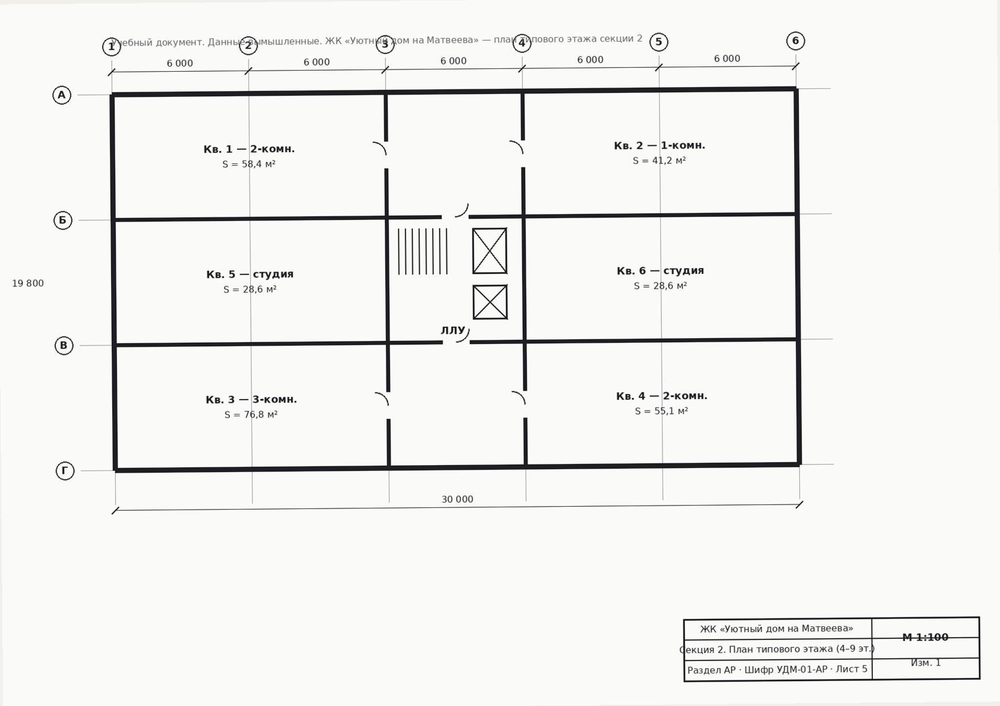

Сквозной кейс по нити «замечание ГГЭ → смежники → версия РД → ответ». Вы проживаете рабочую неделю ГИПа на ЖК «Уютный дом на Матвеева» — от таблицы замечаний государственной экспертизы до подписанного ответа по спорному классу бетона — и на каждом шаге собираете свой «пакет по этапу» с помощью ИИ. Эпизоды — условная рабочая неделя: даты документов кейса относятся к июню 2026 года.
Что внутри урока
0 · Как устроен мини-финал
За неделю ГИПу прилетает всё сразу: таблица замечаний государственной экспертизы, письмо смежному разделу, официальный ответ по несоответствию в РД, протокол совещания смежников, проверка комплектности документации. Вы уже проходили эти приёмы по отдельности — теперь пройдёте их подряд, на одном кейсе.
Пять эпизодов, День 1 — День 5. В каждом: реальный документ кейса (раскрывается прямо здесь), готовый промпт из вашего промпт-пака ГИП и короткое действие — приоритизировать, запросить, подтвердить, свести, сверить.
Демо-ответы ИИ помечены «смоделировано» — это ориентир, а не спойлер. Смотрите, где в ответе наблюдение (что буквально написано в документе), где черновик (первая версия от ИИ, до проверки), а где подтверждённый факт (класс бетона или решение, подтверждённые источником). Спецкритерий недели: у любого технического ответа должен быть источник, версия документа и основание технического решения — без этих трёх элементов ответ экспертизе не готов.
День 1, понедельник. Пришла таблица замечаний государственной экспертизы по разделам КР, АР, ПБ — 4 пункта. Прежде чем садиться за ответы, нужно расставить приоритет: что тормозит согласование сильнее всего и что касается безопасности здания, а не только оформления бумаг.
Орган экспертизы: государственная экспертиза (учебно). Разделы: КР, АР, ПБ.
| № | Раздел | Замечание экспертизы | Норматив-основание |
|---|---|---|---|
| 1 | КР | В расчёте монолитной плиты перекрытия не представлена проверка по прогибам (предельные состояния 2-й группы). | СП 63.13330 |
| 2 | АР | Не подтверждена нормативная инсоляция для квартир секции 1, ориентированных на север. | СанПиН 1.2.3685-21, СП 54.13330 |
| 3 | ПБ | Не указан предел огнестойкости несущих конструкций лестнично-лифтового узла. | СП 2.13130 |
| 4 | КР | Несоответствие класса бетона на чертеже КЖ-05 (B25) и в спецификации (B20). | внутренняя несогласованность РД |
Параллельно на этой же неделе техзаказчик прислал письмо № 311 (файл 09) с замечанием по отставанию графика этажей 4–9 (~8%), срок ответа — тоже конец июня. Формально это не про экспертизу, но напоминает: сроки по проекту в целом поджимают, и от скорости закрытия замечаний ГГЭ тоже зависит общий график.
Замечание № 4 выглядит тревожно: две разные цифры класса бетона на одном комплекте. Но прежде чем спешить с приоритетом, проверьте: какое из четырёх замечаний реально блокирует согласование и касается безопасности конструкций, а не оформления документа?
Какое из 4 замечаний экспертизы объективно создаёт наибольший риск и для безопасности, и для срока согласования?
| № | Раздел | Что исправить | Приоритет |
|---|---|---|---|
| 1 | КР | Добавить проверку плиты по прогибам (СП 63.13330) | средний |
| 2 | АР | Подтвердить инсоляцию квартир секции 1 на север (СанПиН / СП 54.13330) | средний |
| 3 | ПБ | Указать предел огнестойкости несущих конструкций ЛЛУ (СП 2.13130) | высокий |
| 4 | КР | Привести класс бетона в спецификации КЖ-05 в соответствие с расчётом | низкий (быстро закрывается) |
📎 Это промпт A2 из твоего промпт-пака ГИП («Реферирование таблицы замечаний ГГЭ до списка «что исправить»»).
День 2, вторник. Замечание № 2 экспертизы — не подтверждена нормативная инсоляция для квартир секции 1, ориентированных на север. У ГИПа нет собственного расчёта инсоляции — это зона ответственности раздела АР. Нужно письмо смежникам: попросить расчёт и объяснить, зачем он нужен именно сейчас.
| № | Раздел | Замечание экспертизы | Норматив-основание |
|---|---|---|---|
| 2 | АР | Не подтверждена нормативная инсоляция для квартир секции 1, ориентированных на север. | СанПиН 1.2.3685-21, СП 54.13330 |
У ГИПа нет расчёта инсоляции — только формулировка замечания и норматив-ориентир. Сам расчёт должен подготовить раздел АР.
Если попросить ИИ «просто написать письмо», он может по инерции вставить правдоподобную цифру часов инсоляции — как будто расчёт уже есть. Единственный корректный ход — запросить сам расчёт, а не предполагаемый результат. Ниже — три варианта письма. Выберите верный.
«АР, замечание ГГЭ № 2 требует подтверждения нормативной инсоляции для квартир секции 1, ориентированных на север (СанПиН 1.2.3685-21, СП 54.13330). Без расчёта по этим квартирам замечание не может быть снято. Прошу подготовить и передать расчёт инсоляции до конца недели — он войдёт в пакет ответа экспертизе. По остальным трём замечаниям ГГЭ работа идёт параллельно, срок ответа экспертизе — также до конца недели».
📎 Это промпт A3 из твоего промпт-пака ГИП («Письмо смежному разделу с запросом недостающих данных»).
День 3, среда — кульминация недели. Замечание № 4: на чертеже КЖ-05 указан класс бетона B25, в тексте спецификации — B20. Экспертиза ждёт официальный ответ: что именно исправлено и на каком основании. Прежде чем отвечать, нужно понять, какая цифра верна — и доказать это документом, а не выбором «на глаз».
Раздел КР. Несоответствие класса бетона на чертеже КЖ-05 (B25) и в спецификации (B20). Норматив-основание: внутренняя несогласованность РД.

📐 Чертёж КЖ-05, план типового этажа секции 2 (фрагмент). На чертеже класс бетона указан как B25.
Класс бетона монолитных конструкций: B25, W6, F150. Арматура: класс А500С (рабочая), А240 (конструктивная).
| Позиция | В спецификации (было, подано на экспертизу) | Общие данные КЖ-01 / чертёж | После проверки (лист изменений № 2) |
|---|---|---|---|
| Плита перекрытия t=200 | B20 | B25, W6, F150 | B25, W6, F150 (исправлено) |
Прежде чем разбирать конкретные цифры, спросите у ИИ принцип: «Какова типовая структура ответа проектировщика на замечание госэкспертизы и что обязательно включить?» — и только потом переходите к самому замечанию № 4.
Какой класс бетона указать в официальном ответе проектировщика на замечание № 4?
Наблюдение (что буквально написано в документах): чертёж КЖ-05 — B25; общие данные листа КЖ-01 — B25; текст спецификации, поданной на экспертизу, — B20.
Черновик (первая гипотеза без проверки): «примирить» цифры или взять более осторожное значение B20 — ни один из вариантов не опирается на источник.
Подтверждённый факт (после сверки с источником и версией документа): верный класс — B25. Он подтверждён общими данными КЖ-01 и совпадает с чертежом; в спецификации была опечатка, устраняется листом изменений № 2.
Официальный ответ: «Замечание принято. В спецификации листа КЖ-05 класс бетона приведён в соответствие с расчётом и чертежом — B25 W6 F150. Изменение оформлено листом изменений № 2 от __. Просим снять замечание». ГИП ___________ /Кузнецов А.В. (вымышл.)/
📎 Это промпт A1 из твоего промпт-пака ГИП («Ответ на замечание экспертизы (несогласованность в РД)») 🔁 приём «шаг назад» ⚠️ риск выдумки.
День 4, четверг. Совещание с разделами КР, АР и ПБ по всем четырём замечаниям экспертизы. У ГИПа — черновые заметки с совещания; нужно собрать из них протокол: по каждому замечанию — решение, ответственный, срок. В этот же день актуален и срок из письма техзаказчика № 311 (файл 09) — конец июня, тот же дедлайн давит и на согласование экспертизы.
Ассистент уже разложил заметки по форме «замечание → решение → ответственный → срок». Прежде чем нести протокол на подпись, сверьте один пункт: по замечанию № 3 (ПБ, огнестойкость) в заметках нет ни расчёта, ни ссылки на сертификат — только «по аналогии с соседней секцией».
| № | Раздел | Решение (черновик ИИ) | Ответственный | Срок |
|---|---|---|---|---|
| 1 | КР | Прогибы плиты — в норме, расчёт по СП 63.13330 прилагается | КР | до пятницы |
| 2 | АР | Расчёт инсоляции секции 1 в работе | АР | до пятницы |
| 3 | ПБ | Решение: принять REI 90 для несущих конструкций ЛЛУ | ПБ | сегодня |
| 4 | КР | Класс бетона B25 подтверждён, лист изменений № 2 в работе | КР | сегодня |
В черновике протокола ИИ записал по замечанию № 3: «Решение: принять REI 90 для несущих конструкций ЛЛУ». Что не так с этой формулировкой?
📎 Это промпт D2 из твоего промпт-пака ГИП («Протокол совещания смежников по замечаниям экспертизы»).
День 5, пятница, конец недели. Перед тем как обновлённый комплект РД уйдёт в экспертизу повторно, нужно свериться: все ли обязательные позиции на месте? Перечень обязательных позиций и приложенная спецификация сверяются строго между собой — без домыслов о том, чего нет в проекте вообще.
| Поз. | Наименование | Марка / класс | Ед. изм. | Кол-во на этаж |
|---|---|---|---|---|
| 1 | Колонна монолитная 400×400 | B25, А500С | шт. | 28 |
| 2 | Плита перекрытия монолитная t=200 | B25, W6 | м³ | 96,4 (482 м²) |
| 3 | Балка-ригель 400×600 | B25, А500С | м | 64 |
| 4 | Лестничный марш сборный | ЛМ 30.12 | шт. | 4 |
| 5 | Арматура рабочая А500С Ø12–25 | А500С | т | 11,8 (по КЖ-04…07) |
| 6 | Арматура конструктивная А240 Ø6–10 | А240 | т | 2,3 |
| 7 | Закладные детали МН-1…МН-4 | сталь С245 | шт. | 36 (под фасад) |
Если какой-то позиции из перечня нет среди приложенных документов — это повод написать «требует проверки», а не «отсутствует в проекте». Особенно если элемент физически упоминается (например, лестничный марш в спецификации), а отдельной ведомости по нему в пакете нет. Кто-то из проектной группы уже сделал вывод по комплектности — прежде чем согласиться, проверьте сами.
| Позиция перечня | Есть / нет / требует проверки | Комментарий |
|---|---|---|
| 1. Общие данные КЖ-01 | есть | класс бетона B25 W6 F150 подтверждён |
| 2. Спецификация КЖ-05 | есть | 7 позиций, площадь этажа 482 м² |
| 3. Ведомость расхода бетона по этажам | есть (в смежном пакете) | сверено со сметчиком: 96,4 × 6 = 578,4 м³ на 6 этажей секции 2 |
| 4. Ведомость расхода бетона на ЛЛУ | требует проверки | лестничный марш в спецификации есть, отдельной ведомости нет в пакете |
| 5. Ведомость расхода стали | есть | 11,8 т рабочая + 2,3 т конструктивная |
| 6. Чертежи армирования КЖ-04…07 | есть | указаны в спецификации как основание |
| 7. Спецификация закладных | есть | 36 шт., под навесной фасад |
📎 Это промпт B2 из твоего промпт-пака ГИП («Проверка комплектности РД по перечню обязательных позиций») ⚠️ риск выдумки.
6 · Финал · Сделай в живом чате
Выберите любой из пяти эпизодов, который ближе к вашей текущей работе, возьмите соответствующий промпт из блока «Мой ИИ-набор ГИПа» ниже и выполните его в реальном чат-боте — но на своём документе (обезличенно: без реальных цен, реквизитов и ПДн). Вставьте результат сюда.
Итог пилота откроется после того, как вы вставите результат и отметите чекбокс.
7 · Финал · Мой ИИ-набор ГИПа
Это итог пилотного среза: пять промптов из промпт-пака ГИП, по одному на каждый эпизод недели. Копируйте и используйте на своих задачах. Не забывайте прикладывать документ и грунтовку против выдумок: «используй только данные из документа; чего нет — не выдумывай, помечай [уточнить]».
8 · Финал · Самопроверка
9 · Сдача куратору
Вставьте результат эпизода, который вы выполнили на своём материале, и e-mail для ответа куратора. Напоминаем про обезличивание: без реальных реквизитов, номеров экспертных заключений и персональных данных.
Материалы урока
Всё содержимое этого шага — тексты, документы кейса и HTML-интерактив — собрано в один архив.
Для команды переноса: архив содержит всё содержимое шага; сам интерактив публикуется на GitHub Pages и подключается через iframe.